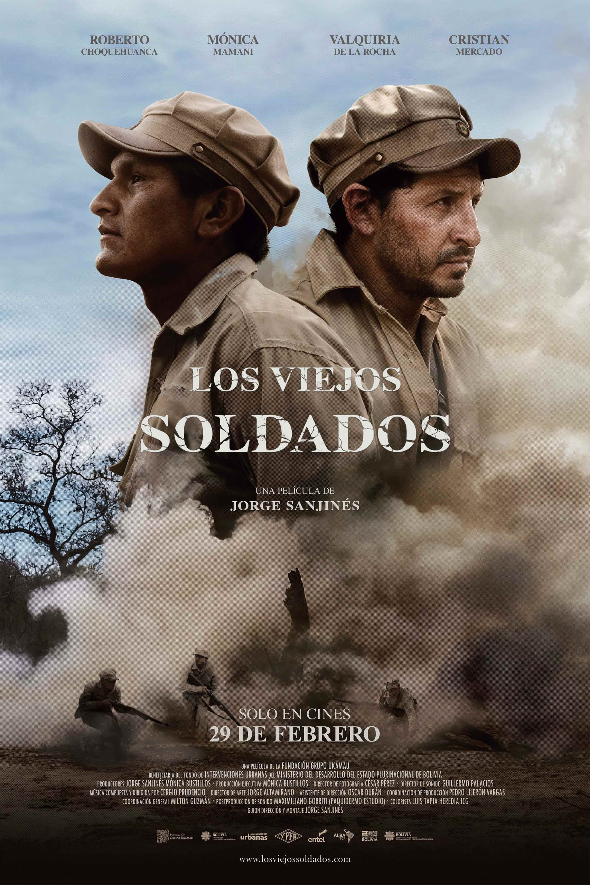

Es un viaje emocionante a través de las vidas entrelazadas de veteranos de guerra, explorando temas de compañerismo, redención y la lucha interna por la paz. Una película conmovedora que te cautivará desde el principio hasta el final.
Trailer|  |
Ficha TécnicaTítulo original: Los Viejos Soldados |
|---|
Jorge Sanjinés, director visionario de "Los Viejos Soldados", nos sumerge en un relato emotivo y poderoso que captura la esencia humana de los veteranos de guerra. Con su maestría cinematográfica, Sanjinés nos guía a través de un viaje de redención y camaradería, profundizando en las complejidades de la condición humana con una sensibilidad única. Su enfoque magistral en la narrativa y la dirección de actores nos brinda una experiencia cinematográfica inolvidable que nos invita a reflexionar sobre el impacto duradero de la guerra en el alma humana.
Dirección: Jorge Sanjinés
Guión: Jorge Sanjinés
Casa Productora: Fundación Grupo Ukamau (Bolivia)
Productores: Mónica Bustillos Troche y Jorge Sanjinés
Productores ejecutivos: Mónica Bustillos Troche
Fotografía: Cesar Pérez
Sonido directo: Guillermo Palacios
Diseño sonoro:
Montaje: Jorge Sanjinés
Música: Cergio Prudencio
Corrección de color: Luis A. Tapia
Post de imagen: Albor cine
Post de sonido Paquidermo estudio
Cristian Mercado |
Roberto Choquehuanca |
Valquiria De La Rocha |
En medio de la Guerra del Chaco, Guillermo, un joven burgués, salva de morir a Sebastián, un campesino aymara. Con el tiempo, forjan una amistad. Guillermo se rebela contra su coronel por un comportamiento racista, es juzgado y condenado a la pena de muerte. Guillermo es ayudado a escapar y Sebastián lo acompaña en la huida en medio del Chaco boliviano. Durante el escape, se enfrentarán a las más duras condiciones del lugar, casi llegando a morir por falta de agua. Al llegar a una población, se separan yéndose por caminos opuestos y prometen volver a encontrarse. Los Viejos Soldados trata del desencuentro en nuestra sociedad boliviana. Desencuentro entre la ciudad y el mundo rural; desencuentro entre habitantes originarios y descendientes blancos y mestizos de los invasores españoles del siglo XVI; desencuentro de culturas, de cosmovisiones, de modos y maneras de ver la Naturaleza, de componer la sociedad. Unos al modo occidental, los otros a su manera ancestral, unos priorizando el yo, otros pensándose primero nosotros, después yo. Creemos que es el desafío máximo que enfrenta hoy la sociedad boliviana. Si ese desencuentro no se resuelve, podría generar un enfrentamiento feroz. Por eso es importante comprender ese desencuentro, escarbar en su origen, en su equívoco, en su peligro. La película que realizamos intenta generar una honda reflexión sobre ese fenómeno pernicioso que tiene profundas raíces, tal vez tan inmensas que no sea posible desentrañarlas y contenerlas, pero es ineludible intentar sembrar luces, convocar a la fantasía y al amor para resolver ese peligro que acecha si no se lo encara. A propósito, René Zavaleta, probablemente el más lúcido sociólogo de Bolivia, escribió: “diezmar indios sin razones en la guerra evidenciaba una ansiedad secreta de suprimirlos, lo que estaba en la lógica del darwinismo social”.